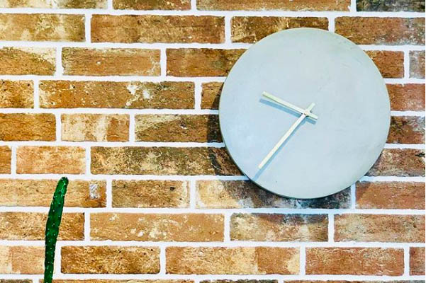

Hej
Mit navn er Pernille Thieme, jeg er 23 år gammel og borsiddende i København. Jeg studerer til hverdag på CPH business i Lyngby hvor jeg læser multimediedesigner 2018-2020.
Denne hjemmeside er et portfolio som viser de opgaver og projekter jeg har lavet i forbindelse med studiet.
I min fritid er jeg frivillig spejderleder hos De Grønne Pigespejder. Udover de ugentlige møder i spejdergruppen er jeg også ansvarlig for gruppens hjemmeside.
Du kan finde spejder hjemmesidenher.
Du kan altid kontakte mig via mail hvor jeg vil gøre mit bedste for at svarer hurtigst muligt.
